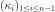
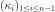
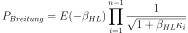
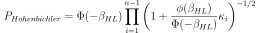
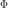
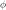
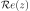
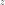
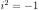
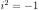

SORM¶
-
class
SORM(*args)¶ Second Order Reliability Method (SORM).
- Available constructors:
- SORM(nearestPointAlgorithm, event, physicalStartingPoint)
Parameters: nearestPointAlgorithm :
OptimizationAlgorithmOptimization algorithm used to research the design point.
event :
EventFailure event.
physicalStartingPoint : sequence of float
Starting point of the optimization algorithm, declared in the physical space.
See also
Analytical,AnalyticalResult,FORM,StrongMaximumTest,SORMResultNotes
See
Analyticalfor the description of the first steps of the SORM analysis.The Second Order Reliability Method (SORM) consists in approximating the limit state surface in U-space at the design point
 by a quadratic
surface. SORM is usually more accurate than FORM e.g. in case when the event
boundary is highly curved.
by a quadratic
surface. SORM is usually more accurate than FORM e.g. in case when the event
boundary is highly curved.Let us denote by
 the dimension of the random vector
the dimension of the random vector  and  the
and  the  main curvatures of
the limit state function at the design point in the standard space.
main curvatures of
the limit state function at the design point in the standard space.Several approximations of the failure probability
 are available in
the standard version of OpenTURNS, detailed here in the case where the origin
of the standard space does not belong to the failure domain :
are available in
the standard version of OpenTURNS, detailed here in the case where the origin
of the standard space does not belong to the failure domain :Breitung’s formula :

 the marginal cumulative density function of the spherical
distributions in the standard space and
the marginal cumulative density function of the spherical
distributions in the standard space and  is the Hasofer-Lind
reliability index, defined as the distance of the design point
is the Hasofer-Lind
reliability index, defined as the distance of the design point
 to the origin of the standard space.
to the origin of the standard space.Hohen Bichler’s formula is an approximation of the previous equation :

where  is the cumulative distribution function of the standard 1D normal distribution and  is the standard Gaussian probability density function.
Tvedt’s formula :
![\left\{
\begin{array}{lcl}
\displaystyle P_{Tvedt} & = & A_1 + A_2 + A_3 \\
\displaystyle A_1 & = & \displaystyle
\Phi(-\beta_{HL}) \prod_{i=1}^{N-1} \left( 1 + \beta_{HL} \kappa_i \right) ^{-1/2}\\
\displaystyle A_2 & = & \displaystyle
\left[ \beta_{HL} \Phi(-\beta_{HL}) - \phi(\beta_{HL}) \right]
\left[ \prod_{j=1}^{N-1} \left( 1 + \beta_{HL} \kappa_i \right) ^{-1/2} -
\prod_{j=1}^{N-1} \left( 1 + (1 + \beta_{HL}) \kappa_i \right) ^{-1/2}
\right ] \\
\displaystyle A_3 & = & \displaystyle (1 + \beta_{HL})
\left[ \beta_{HL} \Phi(-\beta_{HL}) - \phi(\beta_{HL}) \right]
\left[ \prod_{j=1}^{N-1} \left( 1 + \beta_{HL} \kappa_i \right) ^{-1/2} -
{\cR}e \left( \prod_{j=1}^{N-1} \left( 1 + (i + \beta_{HL}) \kappa_j \right) ^{-1/2}
\right)\right ]
\end{array}
\right.](../../_images/math/14e694950bd6ae4b4837124bbeb9313c95ff8837.svg)
where  is the real part of the complex number  and
 the complex number such that .
the complex number such that .
The evaluation of the failure probability is stored in the data structure
SORMResultrecoverable with thegetResult()method.Examples
>>> import openturns as ot >>> myFunction = ot.SymbolicFunction(['E', 'F', 'L', 'I'], ['-F*L^3/(3*E*I)']) >>> myDistribution = ot.Normal([50.0, 1.0, 10.0, 5.0], [1.0]*4, ot.IdentityMatrix(4)) >>> vect = ot.RandomVector(myDistribution) >>> output = ot.RandomVector(myFunction, vect) >>> event = ot.Event(output, ot.Less(), -3.0) >>> # We create an OptimizationAlgorithm algorithm >>> solver = ot.AbdoRackwitz() >>> algo = ot.SORM(solver, event, [50.0, 1.0, 10.0, 5.0]) >>> algo.run() >>> result = algo.getResult()
Methods
getAnalyticalResult()Accessor to the result. getClassName()Accessor to the object’s name. getEvent()Accessor to the event of which the probability is calculated. getId()Accessor to the object’s id. getName()Accessor to the object’s name. getNearestPointAlgorithm()Accessor to the optimization algorithm used to find the design point. getPhysicalStartingPoint()Accessor to the starting point of the optimization algorithm. getResult()Accessor to the result of SORM. getShadowedId()Accessor to the object’s shadowed id. getVisibility()Accessor to the object’s visibility state. hasName()Test if the object is named. hasVisibleName()Test if the object has a distinguishable name. run()Evaluate the failure probability. setEvent(event)Accessor to the event of which the probability is calculated. setName(name)Accessor to the object’s name. setNearestPointAlgorithm(solver)Accessor to the optimization algorithm used to find the design point. setPhysicalStartingPoint(physicalStartingPoint)Accessor to the starting point of the optimization algorithm. setResult(sormResult)Accessor to the result of SORM. setShadowedId(id)Accessor to the object’s shadowed id. setVisibility(visible)Accessor to the object’s visibility state. -
__init__(*args)¶ x.__init__(…) initializes x; see help(type(x)) for signature
-
getAnalyticalResult()¶ Accessor to the result.
Returns: result :
AnalyticalResultResult structure which contains the results of the optimisation problem.
-
getClassName()¶ Accessor to the object’s name.
Returns: class_name : str
The object class name (object.__class__.__name__).
-
getEvent()¶ Accessor to the event of which the probability is calculated.
Returns: event :
EventEvent of which the probability is calculated.
-
getId()¶ Accessor to the object’s id.
Returns: id : int
Internal unique identifier.
-
getName()¶ Accessor to the object’s name.
Returns: name : str
The name of the object.
-
getNearestPointAlgorithm()¶ Accessor to the optimization algorithm used to find the design point.
Returns: algorithm :
OptimizationAlgorithmOptimization algorithm used to research the design point.
-
getPhysicalStartingPoint()¶ Accessor to the starting point of the optimization algorithm.
Returns: point :
PointStarting point of the optimization algorithm, declared in the physical space.
-
getResult()¶ Accessor to the result of SORM.
Returns: result :
SORMResultStructure containing all the results of the SORM analysis.
-
getShadowedId()¶ Accessor to the object’s shadowed id.
Returns: id : int
Internal unique identifier.
-
getVisibility()¶ Accessor to the object’s visibility state.
Returns: visible : bool
Visibility flag.
-
hasName()¶ Test if the object is named.
Returns: hasName : bool
True if the name is not empty.
-
hasVisibleName()¶ Test if the object has a distinguishable name.
Returns: hasVisibleName : bool
True if the name is not empty and not the default one.
-
run()¶ Evaluate the failure probability.
Notes
Evaluate the failure probability and create a
SORMResult, the structure result which is accessible with the methodgetResult().
-
setEvent(event)¶ Accessor to the event of which the probability is calculated.
Parameters: event :
EventEvent of which the probability is calculated.
-
setName(name)¶ Accessor to the object’s name.
Parameters: name : str
The name of the object.
-
setNearestPointAlgorithm(solver)¶ Accessor to the optimization algorithm used to find the design point.
Parameters: algorithm :
OptimizationAlgorithmOptimization algorithm used to research the design point.
-
setPhysicalStartingPoint(physicalStartingPoint)¶ Accessor to the starting point of the optimization algorithm.
Parameters: point : sequence of float
Starting point of the optimization algorithm, declared in the physical space.
-
setResult(sormResult)¶ Accessor to the result of SORM.
Parameters: result :
SORMResultStructure containing all the results of the SORM analysis.
-
setShadowedId(id)¶ Accessor to the object’s shadowed id.
Parameters: id : int
Internal unique identifier.
-
setVisibility(visible)¶ Accessor to the object’s visibility state.
Parameters: visible : bool
Visibility flag.